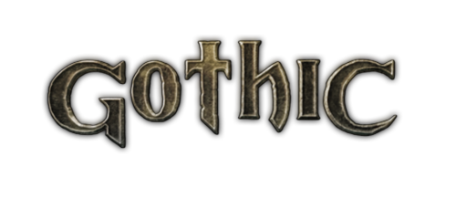

Gothic
Gothic – seria fabularnych gier akcji zapoczątkowana przez firmę Piranha Bytes, która stworzyła trzy pierwsze tytuły i dodatek do części drugiej. Rozszerzenie do części trzeciej, zatytułowane Gothic 3: Zmierzch bogów, wyprodukowała firma Trine Games. Wydana została także gra na telefony komórkowe. Wydawcą serii od 2011 roku jest Nordic Games, w Polsce dystrybuuje ją CDP.
Historia
Pierwsze trzy gry oraz dodatek do drugiej części zostały wyprodukowane przez niemiecką firmę Piranha Bytes. Po wydaniu trzeciej części dotychczasowy dystrybutor JoWooD Entertainment zerwał umowę z twórcami gry i stworzenie kolejnych części zlecił studiom Trine Games i Spellbound Entertainment.
W IV kwartale 2008 roku został wydany pierwszy oficjalny samodzielny dodatek do Gothic 3 o nazwie Gothic 3: Zmierzch bogów produkcji Trine Games. 22 marca 2011 r. została wydana nieoficjalna poprawka do rozszerzenia Zmierzch Bogów, która otrzymała podtytuł Edycja Rozszerzona.
W październiku 2010 roku ukazała się kolejna produkcja, zatytułowana Arcania. Jej akcja rozgrywa się dziesięć lat po wydarzeniach przedstawionych w trzeciej części serii. Arcania została wyprodukowana przez Spellbound Studios.
9 grudnia 2010 przedstawiciele JoWooD Entertainment zapowiedziali samodzielny dodatek do czwartej części, zatytułowany Arcania: Upadek Setarrif, jednak 23 marca 2011 przedstawiciel firmy JoWood ogłosił, że prace nad grą zostały wstrzymane. Pod koniec września 2011 r. zapowiedziano, że jej premiera nastąpi 25 października 2011. W Polsce dodatek został wydany 20 stycznia 2012 roku przez CD Projekt w pełnej polskiej wersji językowej.
Obecnym właścicielem praw do marki Gothic jest THQ Nordic.
